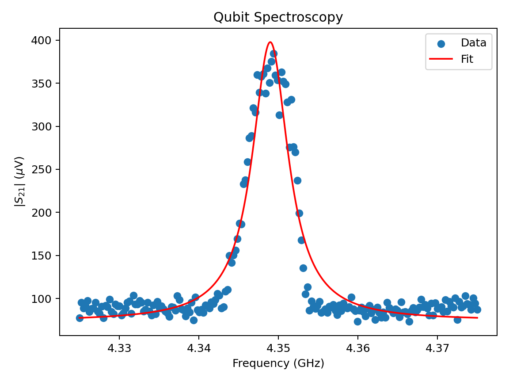

Qubit Spectroscopy
Find the qubit transition frequency ω₀₁ by sweeping drive frequency — first at low power (flat spectrum), then after raising drive power so a clean peak can appear.
Instructions
- Sweep Drive frequency across the full range at low power (you are sweeping the qubit drive — resonator readout ωr is already calibrated).
- Press Raise drive power, then sweep the same range again.
- Watch for a clean peak near ω01. On the level diagram, population moves to |1⟩ only while the drive is on resonance — it returns to |0⟩ when the drive moves away or is weak.
- After the peak appears, diagnose the Ambiguous lab trace (not the clean reference). Then use What’s next to continue in the Ising Calibration playground.
- Use Reset (or Esc) anytime to start over from low power.
Keyboard: Tab moves through sliders, buttons, and radios; arrow keys adjust the focused slider or radio group; Enter/Space activates buttons and radios; Esc resets.
Controls
Full range, low power first.
Finish a full frequency sweep first.
Primary visualization
Two-level energy diagram
Population returns to |0⟩ when drive is off or weak
In |1⟩ only while driven on resonance
Drive arrow (thickness = power)
Signal vs drive frequency
Measured so far (traces as you sweep)
Current drive frequency
Results
Real lab data — compare

Clean Qblox reference: measured |S21| (blue) with red Lorentzian fit. Scatter around the fit is normal lab noise when the peak is well calibrated.
Ambiguous lab trace — use this plot for the question below (not the clean reference).